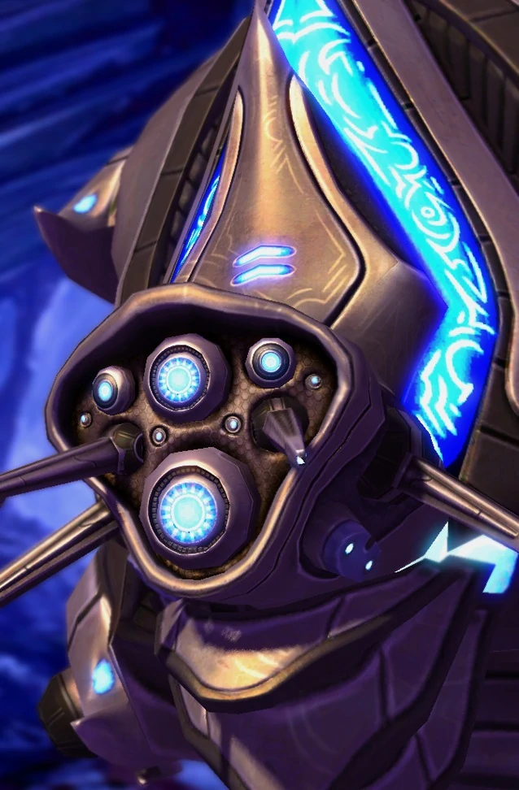

Колосс
| Колосс | |
|  | |
| Информация о юните | |
| Тип: | Наземная боевая единица |
| Описание: | Тяжелобронированный юнит с мощной атакой по области. Может подниматься и спускаться по скалам. Может быть поражен зенитным оружием |
| Построен из: | Завод робототехники |
| Стоимость: |  300 300  200 200  54 54  6 6 |
| Горячие клавиши: | C |
| Атака: Тепловое копье | |
| Цели: | Земля |
| Урон | 10(+1)(х2) |
| DPS: | 18.7(+1.87) |
| Перезарядка: | 1.07 |
| Ранг: | 7(+2) |
| Статистика юнита | |
| Защита: |  200 200  150 150  1 (+1) 1 (+1) |
| Атрибуты: | Бронированный, массивный, механический |
| Зрение: | 10 |
| Скорость: | 3.15 |
| Размер груза: | 8 |
Колоссы — осадные единицы, относительно слабые для своей стоимости; что требует защиты линии фронта наземной и воздушной поддержки. Они предназначены для защиты от легкой брони, сильны против морских пехотинцев, фанатиков, гидралисков и зерглингов; слаб против торов, имморталов, ультралисков; и чрезвычайно уязвимы для противовоздушных викингов, фениксов и коррупторов.
Высота и скалолазание
 Колосс, кажется, перешагивает через уступы из-за системы обратной кинематики (IK) StarCraft II. Он может подниматься по уступам только на один уровень
за раз и блокируется более высокими скалами. Он также может переступать через небольшие дружественные отряды, но не через другие колоссы или препятствия.
Как и другие массивные юниты, колосс может разрушить силовое поле, просто получив приказ пройти через него. Колосс достаточно высок, чтобы видеть вершины
утесов, что позволяет ему взбираться на них и стрелять по возвышенностям без корректировщика. Высота колосса позволяет атаковать его с воздуха, например,
ракетной башней (даже если это наземный юнит). Blizzard подтвердила, что это связано с тем, что колосс настолько высок, что он считается как наземным, так
и воздушным юнитом с точки зрения того, какие атаки могут его поразить. Если атакующий вражеский юнит (например, Тор), который может атаковать как наземные,
так и воздушные юниты, атакует колосса, он будет использовать против колосса ту атаку, которая сильнее.
Колосс, кажется, перешагивает через уступы из-за системы обратной кинематики (IK) StarCraft II. Он может подниматься по уступам только на один уровень
за раз и блокируется более высокими скалами. Он также может переступать через небольшие дружественные отряды, но не через другие колоссы или препятствия.
Как и другие массивные юниты, колосс может разрушить силовое поле, просто получив приказ пройти через него. Колосс достаточно высок, чтобы видеть вершины
утесов, что позволяет ему взбираться на них и стрелять по возвышенностям без корректировщика. Высота колосса позволяет атаковать его с воздуха, например,
ракетной башней (даже если это наземный юнит). Blizzard подтвердила, что это связано с тем, что колосс настолько высок, что он считается как наземным, так
и воздушным юнитом с точки зрения того, какие атаки могут его поразить. Если атакующий вражеский юнит (например, Тор), который может атаковать как наземные,
так и воздушные юниты, атакует колосса, он будет использовать против колосса ту атаку, которая сильнее.
Атаки
Колосс атакует только наземные юниты. Анимация атаки представляет собой размашистый луч, анимация длится около секунды. Все цели продолжают получать урон одновременно. Атака всегда поражает линейную область, перпендикулярную направлению, в котором смотрит колосс. Это позволяет добиться высокой степени контроля. Атака наносит линейный урон, который очень эффективен против групп юнитов, таких как морские пехотинцы и фанатики. Безопаснее использовать колоссов против терранов, а не псионических бурь, так как призраки противостоят высшим тамплиерам. Против зергов колоссы очень эффективны против гидралисков, которые стали более опасными с поддержкой тараканов. Лучи не имеют «слепой зоны» и могут поражать врагов прямо рядом с колоссом.